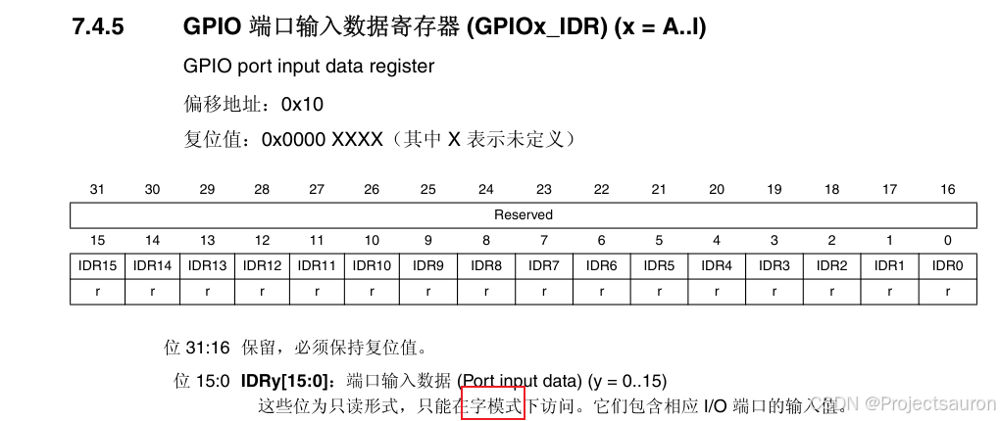
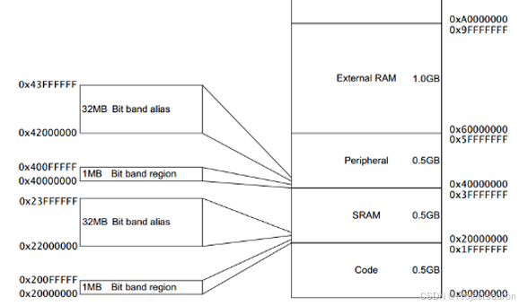
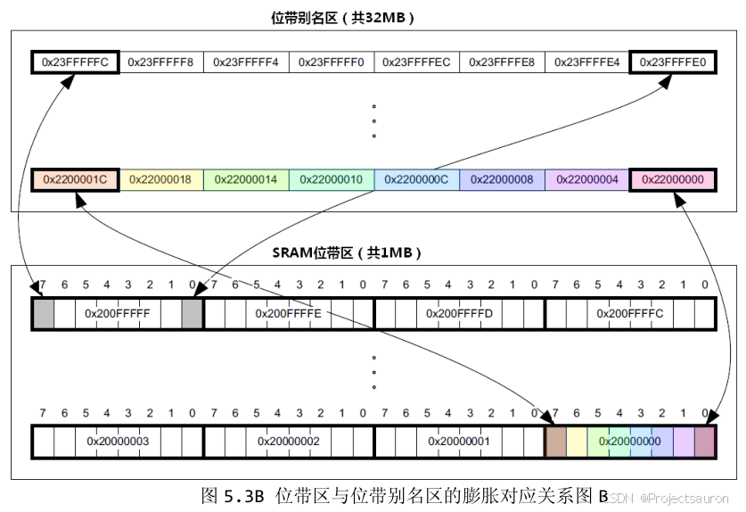
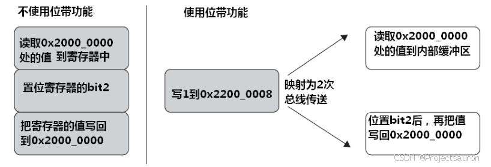
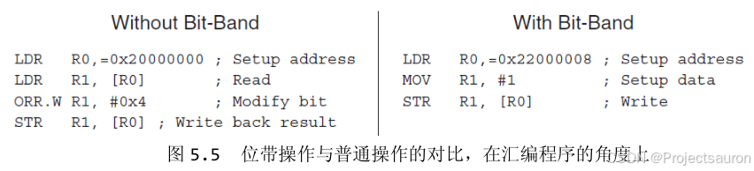
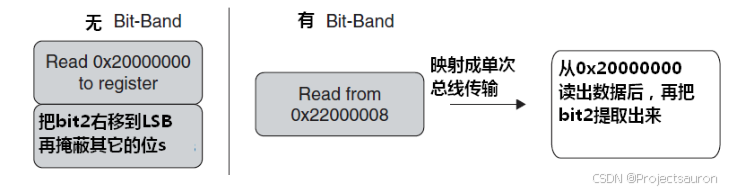
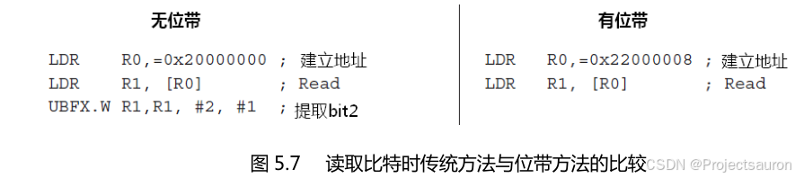

STM32 位带操作
[toc]
一、简介
如果你学过 51，是否还记得你是如何点亮的 led？很简单，见下：
1 | sbit LED1 = P2^0; // 控制到 P2.0 脚 |
通过简单的两句话就可以点亮一个 led 了。这就是位带（Bit-banding）操作，支持位带操作后，可以使用普通的加载/存储指令来对==单一的比特==进行读写。
而我们也知道，在 STM32 中并不能直接操作寄存器的某一个 Bit 位，而只能通过字来读写寄存器，例如：

那能否实现 51 类似的 GPIO 控制功能，能够直接操作位？我们知道，STM32 是 32 位的处理器，其 32 位地址总线提供了 4G 的地址空间。于是 Cortex-M 就利用额外的地址在内核中开辟了一块地址区域（位带别名）：可以将 IDR1 这类 Bit（位带区）映射到位带别名区域对应的地址，只需要操作映射后的地址，就可以实现操作这个 IDR1 位了。在主位带区域，每个地址对应一个字节的数据，在“位带别名”区域中，每个地址对应同一个数据的一个位。简单来说就是映射操作。
参考 <<CM3权威指南>> 第五章(P87~P92)
二、映射关系
不过，在 STM32F407 中，有两个地方实现了位带：
SRAM 区的最低 1MB 空间
SRAM 的位带区的地址为：**0X2000 0000~X200F 0000，大小为 1MB，经过膨胀后的位带别名区地址为：0X2200 0000~0X23FF FFFF**，大小为 32MB。操作 SRAM 的比特位这个用得很少。外设区最低 1MB 空间。
外设位带区的地址为：**0X40000000~0X400F0000，大小为 1MB，这 1MB 的大小包含了 APB1/2 和 AHB1 上所有外设的寄存器，AHB2/3 总线上的寄存器没有包括。 AHB2 总线上的外设地址范围为：0X500000000X50060BFF，AHB3 总线上的外设地址范围为：0XA00000000XA0000FFF。 外设位带区经过膨胀后的位带别名区地址为：0X42000000~0X43FFFFFF**，这部分地址空间为保留地址，没有跟任何的外设地址重合。
这两个 1MB 的空间除了可以像正常的 RAM 一样操作外， 他们还有自己的位带别名区，位带别名区把这 1MB 的空间的每一个位膨胀成一个 32 位的字，当访问位带别名区的这些字时，就可以达到访问位带区某个比特位的目的。

也就是说，位带操作就是把位带区中一个地址的 8 个位分别映射到位带别名区的 8 个地址（LSB 有效，即最低位有效），通过操作相应地址的方式实现操作某个位。
为什么 LSB 有效？
因为 STM32 的系统总线是 32 位的， 按照 4 个字节访问的时候是最快的，所以膨胀成 4 个字节来访问是最高效的。

位带区里每个地址的每 1 位膨胀为别名区里一个 32 位的字（32 位处理器中，1字=4字节），例如：0x20000000 的第 0 位对应 0x22000000，第 1 位对应 0x22000004 等。
三、地址转换
1、外设位带别名区地址
对于片上外设位带区的某个比特，记它所在字节的地址为 A，位序号为 n ($0<=n<=31$)(n的范围根据具体寄存器能控制的位决定)，则该比特在别名区的地址为：
1 | AliasAddr= =0x42000000 + (A-0x40000000)*8*4 +n*4 |
0X42000000是外设位带别名区的起始地址0x40000000是外设位带区的起始地址，则（A-0x40000000）表示该比特前面有多少个字节- 一个字节有 8 位，所以
*8；而一个位膨胀后是 4 个字节，所以*4 - n 表示该比特在 A 地址的序号，因为一个位经过膨胀后是四个字节，所以也
*4。
2、SRAM 位带别名区地址
对于 SRAM 位带区的某个比特，记它所在字节的地址为 A，位序号为 n ($0<=n<=31$)(n 的范围根据具体寄存器能控制的位决定)，则该比特在别名区的地址为：
1 | AliasAddr= =0x22000000+ (A-0x20000000)*8*4 +n*4 |
公式分析同上。
3、统一公式
为了方便操作，我们可以把这两个公式合并成一个公式，把“位带地址+位序号”转换成别名区地址统一成一个宏。
1 |
addr & 0xF0000000是为了区别 SRAM 还是外设，实际效果就是取出 4 或者 2：- 如果是外设，则取出的是 4，
+ 0X02000000之后就等于0X42000000，0X42000000是外设别名区的起始地址 - 如果是 SRAM，则取出的是 2，
+ 0X02000000之后就等于0X22000000，0X22000000是 SRAM 别名区的起始地址。
- 如果是外设，则取出的是 4，
addr & 0x00FFFFFF屏蔽了高三位，相当于减去0X20000000或者0X40000000，但是为什么是屏蔽高三位？- 因为外设的最高地址是：
0X20100000， 跟起始地址0X20000000相减的时候，总是低 5 位才有效，所以干脆就把高三位屏蔽掉来达到减去起始地址的效果，具体屏蔽掉多少位跟最高地址有关。 - SRAM 同理分析即可。
<<5相当于*8*4，<<2相当于*4，这两个我们在上面分析过。
- 因为外设的最高地址是：
最后我们就可以通过指针的形式操作这些位带别名区地址，最终实现位带区的比特位操作。
1 | // 把一个地址转换成一个指针 |
四、GPIO 位带操作
经过上面的铺垫，就可以轻松实现 STM32 上 GPIO 位带操作了：
1 |
|
使用位带操作，不仅更加方便，而且步骤少，更重要的是==位带操作属于原子操作==。
比如，欲设置地址 0x2000 0000 中的比特 2，则使用位带操作的设置过程如下图所示：

对应的汇编代码如下：

写操作同理：

